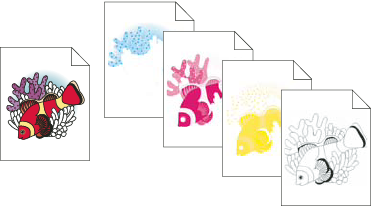

About color separations
To reproduce color and continuous-tone images, printers usually separate artwork into four plates (called process colors)—one plate for each of the cyan, magenta, yellow, and black portions of the image. You can also include custom inks (called spot colors). In this case, a separate plate is created for each spot color. When inked with the appropriate color and printed in register with one another, these colors combine to reproduce the original artwork.
The process of dividing the image into two or more colors is called color separating, and the film from which the plates are created are called the separations.

 To produce high-quality separations, you should
work closely with the print shop that will produce your separations,
consulting its experts before beginning each job and during the process.
To produce high-quality separations, you should
work closely with the print shop that will produce your separations,
consulting its experts before beginning each job and during the process.